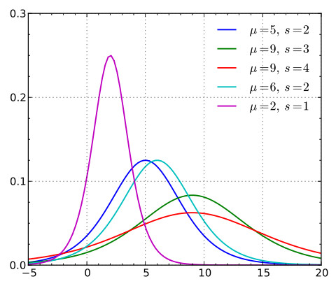
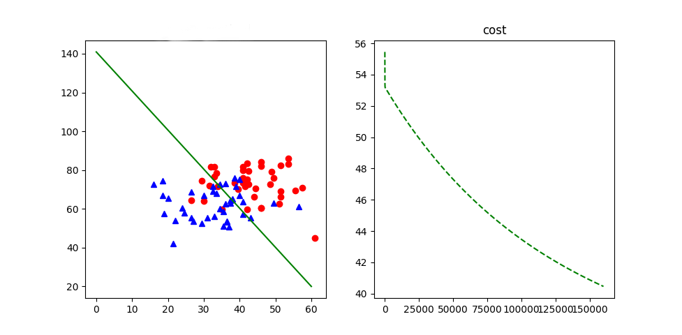
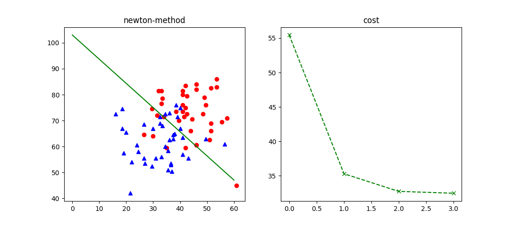

1. 核心思想
上一篇讲到了线性回归，本篇要讲的是分类问题。于是我们想到了能否使用线性回归来处理分类问题，事实上并不可行，由于在线性模型中，预测模型会出现任意值，而二分类模型中，y 的取值有只有 0 或者 1， 因此线性回归模型不适用于分类问题。但是如果能将线性回归的结果映射到（0，1）区间，那么就可以帮助我们进行分类了。问题的关键就变成了寻找一个具有良好数学性质的映射函数的选择。
2. 逻辑斯蒂分布
随机变量 X 服从逻辑斯蒂分布，是指 X 具有如下的分布函数和密度函数：


可以看到，逻辑斯蒂分布函数以点（μ，1/2）为中心对称，而著名的sigmoid函数就是当 γ= 1，μ= 0时的逻辑斯蒂分布函数。
3. 逻辑斯蒂模型
逻辑斯蒂回归模型是一种分类模型，用条件概率分布P（X|Y）表示，形式为参数化的逻辑斯蒂分布。对于二项逻辑斯蒂回归而言，模型为：
其中 $w\cdot x + b$ 可看作是x 的线性函数。线性函数的值越接近正无穷，概率值就越接近1；线性值越接近负无穷，概率值越接近0，这样的模型是逻辑斯蒂回归模型(《统计机器学习》李航)
逻辑斯蒂回归目的是为了解决分类，那么就需要有一个决策边界，所有可选择一个阈值作为分类的边界。如没有特别的情况对于二分类可设为0.5，即：
4. 模型建立
从似然函数理解
对于给定的训练数据集，可通过进行极大似然估计模型参数，从而建立逻辑斯蒂回归模型。对数似然函数为：
从损失函数理解
对于线性回归，是从损失函数来介绍的。对于log损失在单个数据点上的定义为：可以看到，最大化似然函数和最小化损失函数是等价的。
5. 参数估计
5.1 梯度下降法：
根据梯度下降算法向量形式进行coding：
def sigmoid(x):
g = 1.0 / (1 + np.exp(-x))
return g
def gradientAscendMatrix(theta,X,Y,maxIteration,alpha,lamd = 0) :
"""
梯度下降法
:param theta矩阵
:param X特征矩阵
:param Y矩阵
:param 最大迭代次数
:param 下降步长
:return 优化解theta
"""
m = X.shape[0]
while(maxIteration):
thetaTX = np.dot(X,theta)
hypothesis = sigmoid(thetaTX)
error = hypothesis - Y
grad = np.dot(X.T,error/m)
theta = theta - alpha * (grad + lamd * theta)
# 计算|| Wk+1 - Wk||，根据阈值判断是否停止迭代
updateW = np.dot(grad.T, grad)
if (updateW < 0.0005):
break
maxIteration -= 1
return theta
5.2 牛顿法
梯度下降法，主要利用目标函数的局部性质，而牛顿法则利用局部的一阶和二阶偏导信息，去估计整个目标的趋势。相比梯度下降法，牛顿法有一定的对全局的预测性，收敛性质更加优秀。由于牛顿法是二阶收敛的，比梯度下降法收敛速度更快。
根据如下的迭代公式进行coding，具体推导可浏览文尾所附链接。
def newtonMethod(theta,X, Y, maxIteration,lamd = 0) :
"""
牛顿法进行参数估计
:param theta矩阵
:param X特征矩阵
:param Y矩阵
:param 最大迭代次数
:lamd 惩罚系数
:return theta优化解
"""
m = X.shape[0]
while(maxIteration) :
grad = np.matrix(np.zeros(3)).T
Hessian = np.matrix(np.zeros((3,3)))
for i in range(m):
thetaTX = np.dot(theta.T,X[i].T)
thetaTX = thetaTX[0,0]
hypothesis = sigmoid(thetaTX)
error = hypothesis - int(Y[i])
grad += error/m * X[i].T
Hessian += 1.0/m * hypothesis * (1 - hypothesis) * np.dot(X[i].T, X[i])
# 通过阈值停止迭代
updateW = np.dot(grad.T, grad)
if (updateW < 0.0005):
break
try:
# 不加正则项
if(lamd == 0) :
theta = theta - (np.linalg.inv(Hessian) * grad )
# 加正则项
else:
regHessian = Hessian + lamd * np.eye(len(theta))
regGrad = grad + lamd * theta
theta = theta - (np.linalg.inv(regHessian) * regGrad)
except:
maxIteration -=1
continue
maxIteration -= 1
return theta
6. 实际数据测试
使用 Andrew Ng斯坦福课程 Machine Learning 中的成绩数据进行测试。共80组样本数据，
使用梯度下降法进行参数估计，结果如下：

梯度法在迭代终止条件为梯度小于0.0005时，迭代到约160000次时才停止。使用牛顿法进行参数估计，结果如下：

相比梯度法，newdon法收敛速度快很多。同样的迭代终止条件为梯度小于0.0005，迭代4次就收敛到优化解。
使用留一法进行交叉验证，可计算出分类的准确率达0.775。增加惩罚项，惩罚系数设为0.0005时，准确率最高可达到0.8
7. 一点体会
逻辑回归和线性回归有许多相似，也有许多不同之处。首先，二者目标不同，逻辑回归和线性回归都是学习一个线性函数，线性回归是在拟合输入向量 x 的分布，而逻辑回归中的线性函数是要拟合出决策边界。线性回归是为了解决回归问题，而逻辑回归是为了解决分类问题，根据已知的训练集训练出模型，再对新的数据的所属类别进行预测。如果直接按照线性回归来处理的话，也会根据样本x拟合一条直线，这时候若直接通过设定一个阈值来判断属于哪一类的话，是非常不准确的。如果出现离群点，则会大大改变拟合直线，导致判断出现错误，而且有时候无法知道线性函数的取值范围，阈值很难确定。因此此时需要变换，将其映射到某一个确定的区间。sigmoid 函数很好的满足了这个条件，且其具有很好的数学性质，将函数结果映射到了（0，1），同时也减少了离群点的影响。
Reference
- 李航，统计学习方法
- Andrew Ng, Machine Learning
- openclassroom.stanford
- 从数学角度分析的Logistic
- 浅析Logistic Regression
在博主学习过程中，参考了许多他人作品，并整理到笔记，后根据笔记作此篇文章，如文中有引用他人作品部分，还请指出，以添加说明。
请多多指教！